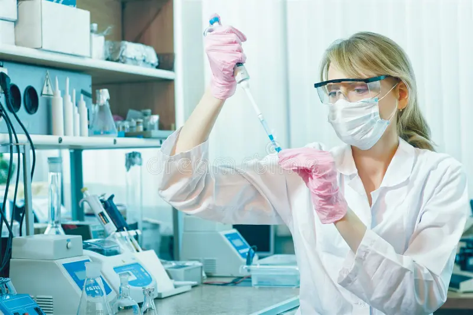
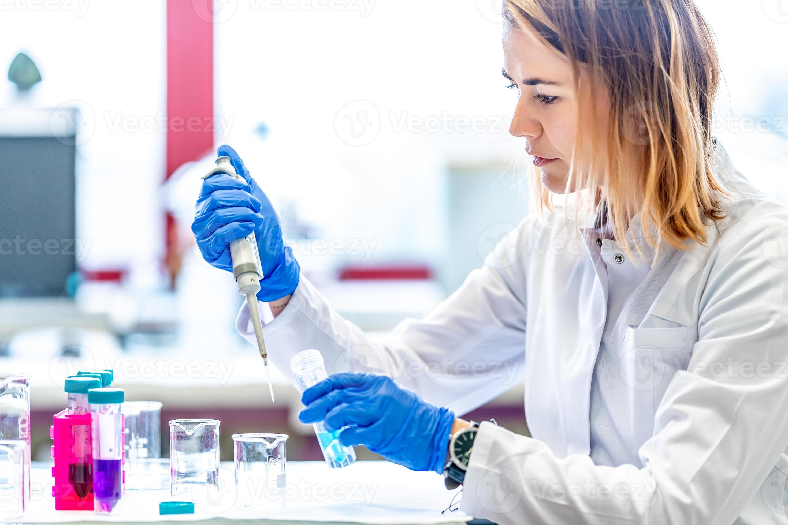

Soy una estudiante en proceso de crecimiento , creando mi camino con calma . Me gusta descubrir cosas nuevas y poner cariño y esfuerzo en todo lo que hago.
|
¡Hola! Soy Natalia, estudiante de 2º de Bachillerato. Me interesan la química, la ciencia y cómo las ideas se convierten en cosas reales. Me gusta especialmente el desarrollo web y los proyectos donde se mezclan creatividad y lógica. Ahora mismo estoy enfocándome en mejorar mi organización y en aprender a presentar mejor mis trabajos. Mi plan a corto plazo es practicar un poco cada día y en 2026 ser una maestra de crear páginas webs. Un detalle friki: me encanta descubrir datos curiosos . Por ejemplo, El cerebro humano puede generar suficiente electricidad como para encender una bombilla LED pequeña. |
 |
Fuera de clase, me desconecto con cosas que mezclan creatividad y reto. Estas son algunas:
Si te interesa como hacer páginas webs HTML con Visual studio code, aquí hay un recurso muy bueno: Sitio oficial de HTML MASTERS
|
 Natalia creando un nuevo compuesto químico |
Natalia escribiendo su nuevo libro |
Me gusta trabajar en proyectos pequeños pero completos. Aquí dejo algunos ejemplos:
| Proyecto | Descripción | Tecnologías | Estado |
|---|---|---|---|
| Web personal | Página HTML con secciones, imágenes, enlaces,tablas y mis proyectos . | HTML | Versión única |
| Investigación | Estudio sobre el cáncer de páncreas. | Documentación | En proceso |
| Creación de la estructura de una presa | Estudio sobre la geografía del lugar. | Documentación y muestras geológicas | En proceso |
Para inspirarme, a veces leo noticias o busco documentos relacionados con el tema. Por ejemplo: Investigación cáncer.